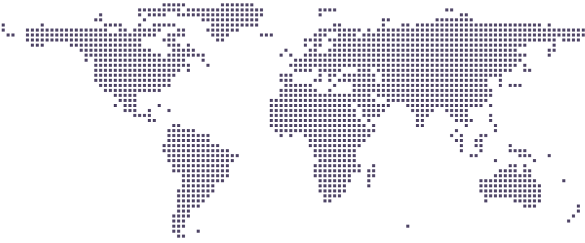

PLAYER 01 / PROFILE SELECT
HELLO, I AM
你的昵称
这里将放置一句简短的个人介绍，用来说明你正在做什么、喜欢什么。
- LOCATION
- CN
- STATUS
- ACTIVE
- FOCUS
- PLAY / CODE
SCROLL
PROFILEGEARPROJECTSCROSSHAIRGITHUBACTIVITYVISITORS
PROFILEGEARPROJECTSCROSSHAIRGITHUBACTIVITYVISITORS
01 / PLAYER DATA
个人信息
PROFILE
LV.01
- 学校
- 等待填写
- 生日
- MM / DD
- 所在地
- 等待填写
- 当前状态
- 在线
01
MOUSE
DPI----
02
KEYBOARD
SWITCH----
03
HEADSET
MODESTEREO
04
MOUSEPAD
SIZE----
03 / PROJECT SELECT
项目
PROJECTS
SELECTED REPOSITORIES
00 PROJECTS
项目正在整理中，欢迎先到 GitHub 看看我的开发记录。
04 / AIM LAB
准星分享
CROSSHAIR
SELECTED PRESET
1322
- 颜色
- 白色
- 轮廓
- 关闭
- 中心点
- 关闭
IMPORT CODE
0;p;0;s;1;P;h;0;f;0;m;1;0l;3;0v;3;0o;2;0a;1;0f;0;1b;0;A;o;0.8;d;1;z;1;m;1;0b;0;1b;0;S;c;0;o;1
05 / DEV LOG
GitHub 状态
GITHUB
DEMO DATA / API NOT CONNECTED
CONTRIBUTION MATRIXLAST 52 WEEKS
LESSMORE
RECENT ACTIVITYLIVE
等待接入真实提交记录GitHub Events API
仓库与提交信息将在这里显示repository / commit
支持展示 Push、Star 与 Releasepublic activity
06 / SIGNAL FEED
最近动态
ACTIVITY
哔哩哔哩
标题、发布时间、封面和链接接入后自动更新。
微博
文字、图片与原始动态链接会汇总到这一条时间线。
网易云音乐
每周排行、艺人、专辑与歌曲链接会自动更新。
07 / WORLD SIGNALS
访客足迹
VISITORS
来自世界各处的访问，在这里点亮。
访客数 · 估算--按 IP 与浏览器去重
访问次数--PV / PAGE VIEWS
国家 / 地区--按 IP 大致归属统计
GLOBAL VISITOR MAP等待接入

访客地图将在接入统计后点亮。
访问次数少多